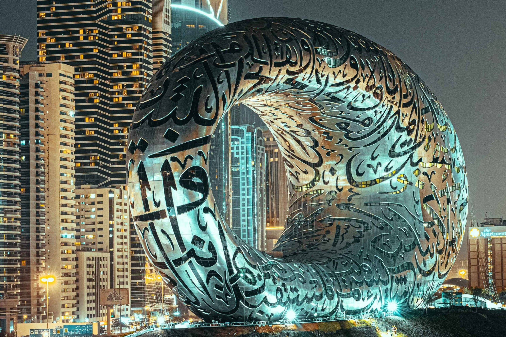

The United Arab Emirates (UAE), or simply the Emirates, is a country in West Asia, in the Middle East, at the eastern end of the Arabian Peninsula.

The Burj Khalifa (known as the Burj Dubai prior to its inauguration) is a skyscraper in Dubai, United Arab Emirates. It is the world's tallest structure. With a total height of 829.8 m (2,722 ft, or just over half a mile) and a roof height (excluding antenna, but including a 242.6 m spire) of 828 m (2,717 ft), the Burj Khalifa has been the tallest structure and building in the world since its topping out in 2009, surpassing Taipei 101, the previous holder of that status.

Museum of the Future (Arabic: متحف المستقبل) is a landmark devoted to innovative and futuristic ideologies. Located in the Financial District of Dubai, UAE. The museum, with 23 floors, is dedicated to exploring the future of science, technology, and innovation. The Museum of the Future is a torus-shaped building with windows in the form of a poem about the future, written by His Highness Sheikh Mohammed bin Rashid Al Maktoum, Vice President and Prime Minister of the United Arab Emirates and Ruler of Dubai. It was founded by the Dubai Future Foundation. The Government of the United Arab Emirates opened the museum on 22 February 2022
The Palm Jumeirah is an archipelago of artificial islands on the Persian Gulf in Jumeirah, Dubai, United Arab Emirates. It is part of a larger series of developments called the Palm Islands, including Palm Jebel Ali and the Dubai Islands, which, when completed, will together increase Dubai's shoreline by a total of 520 kilometres (320 mi). It has a population of over 25,000 as of 2022.

One of the largest suspended aquariums in the world. The average time to visit the Aquarium Tunnel is approximately 15 to 30 minutes. Underwater Zoo, located on Level 2, takes about 45 mins – 1.5 hours. Children under 2 years of age free of charge. Adults & Children 2 years and above AED199.00 each. Children under 15 years of age must be accompanied by an adult (15+ years old) Tickets must be used on the date selected.

The Dubai Fountains are a choreographed fountain system located on the 12 hectare (30 acre) artificial Burj Khalifa Lake, at the center of the Downtown Dubai development in Dubai, United Arab Emirates. It was designed by WET Design, a California-based company also responsible for the fountains at the Bellagio Hotel Lake in Las Vegas. Illuminated by 6,600 lights and 25 colored projectors, it is 275 m (902 ft) long and shoots water up to 500 ft (152.4 m) into the air accompanied by a range of classical to contemporary Arabic and world music. It was built at a cost of AED 800 million (USD $218 million).